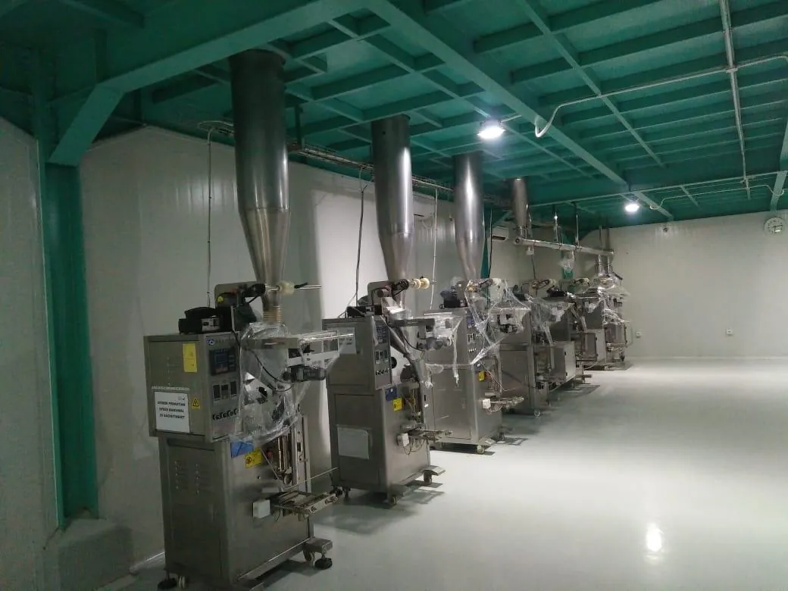

Lini proses turnkey · Pangan & herbal
Lini pengolahan teh bubuk
- Tantangan
- Proses serbuk yang higienis dan tertutup dari penuangan bahan baku hingga pengisian — dirancang sesuai cGMP.
- Solusi
- Kami merancang, memproduksi, memasang, dan melakukan commissioning seluruh lini: dumping station, vibro screen, ribbon mixer, vacuum conveying, magnet trap, metal detector, IBC, dan auger tiga outlet yang menyuplai mesin filling.
- Hasil
- Satu pemasok yang bertanggung jawab dari model 3D hingga commissioning, dan sistem closed-loop yang menjaga produk tetap tertutup.
- Dumping
- Vibro screen
- Ribbon mixer
- Vacuum conveying
- Magnet trap
- Metal detector
- IBC
- Auger ×3
- Filling